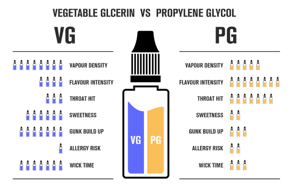
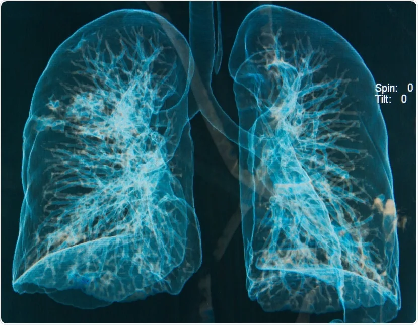
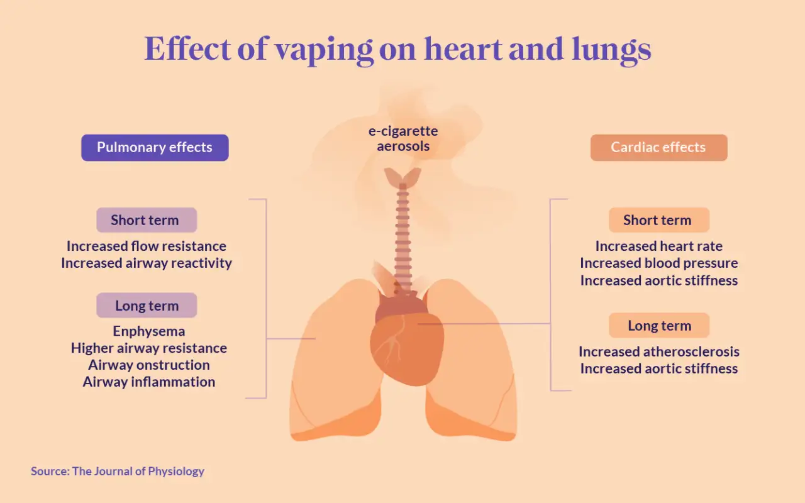
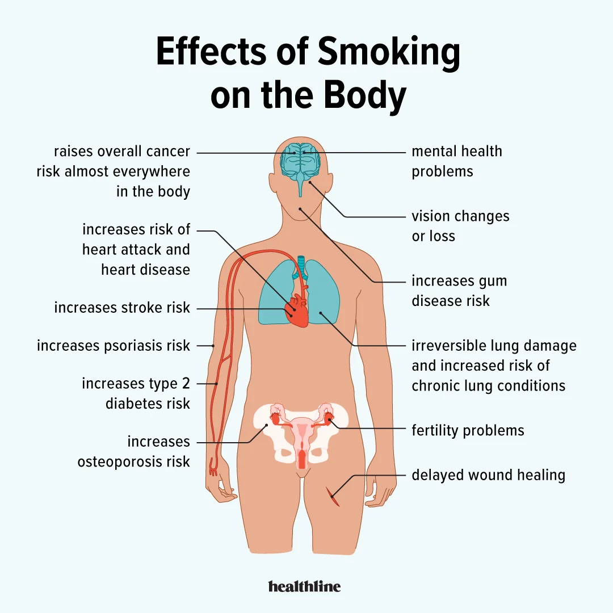
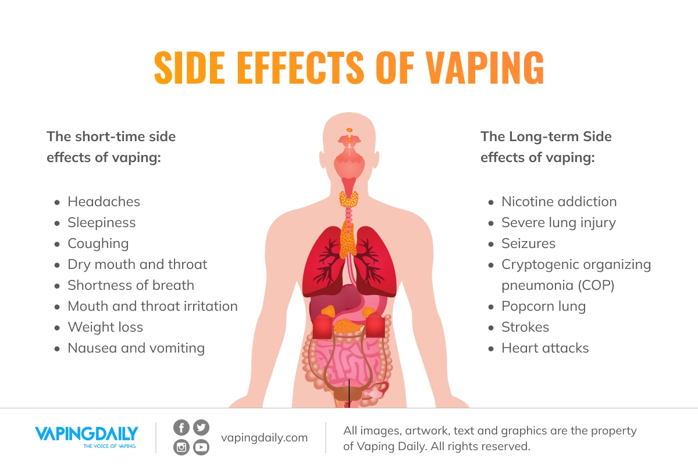

Vaping has been promoted as a potentially less harmful alternative to smoking cigarettes, as it involves
inhaling vapor rather than smoke. However, there is still much research that needs to be done on the
long-term health effects of vaping, and it is not without its own risks.
•Reduced exposure to harmful chemicals:
Traditional cigarettes contain thousands of chemicals, many of
which are known to cause cancer and other serious health problems.
•Vaping liquids:
on the other hand, typically only contain a few ingredients, such as propylene glycol,
vegetable glycerin, flavoring, and nicotine (if desired).

•Less secondhand smoke:
Because vaping produces vapor rather than smoke, it does not produce the same
level of secondhand smoke as cigarettes. This can be beneficial for people who live or work with
smokers.
•Smoking cessation aid:
Some people have used vaping as a tool to help them quit smoking cigarettes. The
nicotine in e-cigarettes can provide the same type of hit that smokers crave, but without the tar and
other harmful chemicals found in cigarettes.
•It's important to note that these benefits are not yet scientifically proven and more research is
needed
to understand the long-term effects of vaping. Additionally, the recent cases of severe lung injury
associated with vaping have raised concern about the safety of vaping.
While vaping is generally considered to be less harmful than smoking cigarettes, it is not without its
own risks.

•Nicotine addiction:
Nicotine is an addictive substance, and vaping can lead to nicotine addiction,
especially in young people whose brains are still developing.
•Exposure to harmful chemicals:
While vaping liquids typically contain fewer chemicals than cigarettes,
some e-liquids have been found to contain potentially harmful substances, such as diacetyl (a chemical
linked to a serious lung disease called bronchiolitis obliterans) and heavy metals.
•Battery explosions:
Vaping devices, particularly e-cigarettes, rely on lithium-ion batteries, which can
be dangerous if they malfunction. Reports of e-cigarette batteries exploding or catching fire have been
reported.
•Gateway to smoking:
Some studies suggest that vaping may act as a "gateway" to smoking cigarettes,
especially among young people.
Long-term health effects: There is still much we don't know about the long-term health effects of
vaping, as it is a relatively new phenomenon.
•Long-term health effects:
There is still much we don't know about the long-term health effects of
vaping, as it is a relatively new phenomenon. Some studies have linked vaping to an increased risk of
heart disease and lung problems, but more research is needed to understand the full extent of these
risks.

It's important to note that vaping is not safe for everyone, especially for young people, pregnant
women, and people with pre-existing lung conditions. it is also not safe to assume that because vaping
is less harmful than smoking it is safe. It's important to consult with a healthcare professional before
making the decision to vape or use any nicotine-containing products.
Side Effects Of Smoking

Smoking cigarettes has numerous negative side effects on both your physical and mental health.
Physical Side Effects:
•Increased risk of lung cancer: Smoking is the leading cause of lung cancer, which is a type of cancer
that starts in the lungs. It is also the leading cause of cancer deaths worldwide.
•Heart disease: Smoking increases your risk of heart disease, which is a condition that causes your
heart
to work harder to pump blood throughout your body. This can lead to heart attacks, angina (chest pain),
and strokes.
•Chronic obstructive pulmonary disease (COPD): Smoking can cause COPD, which is a group of lung diseases
that make it difficult to breathe. These diseases include chronic bronchitis and emphysema.
•Respiratory infections: Smoking damages the lining of your airways, making it easier for bacteria and
viruses to enter your body and cause respiratory infections such as bronchitis and pneumonia.
•Reduced fertility: Smoking can affect both men and women's fertility. In men, it can reduce the number
and quality of sperm, and in women, it can disrupt the menstrual cycle and make it harder to get
pregnant.
•Mental Health Side Effects:
•Depression: Studies have shown that people who smoke are more likely to suffer from depression than
those who do not smoke.
•Anxiety: Smoking can also increase feelings of anxiety and stress.
•Cognitive decline: Smoking can lead to cognitive decline, which is a decrease in mental abilities such
as memory and concentration.
Overall, the negative side effects of smoking are numerous and severe. If you are a smoker, it is
important to consider quitting in order to improve your overall health and well-being. There are many
resources available to help you quit smoking, including nicotine replacement therapy, prescription
medications, and support groups.
Side Effects Of Vaping

Inhale vaporized nicotine or non-nicotine solutions.
While e-cigarettes are often marketed as a safer
alternative to traditional cigarettes, they can still have negative side effects.
One of the main side effects of e-cigarette use is nicotine addiction.
E-cigarettes typically contain
nicotine, which is a highly addictive substance that can lead to physical dependence. This can make it
difficult for people to quit using e-cigarettes, even if they want to.
Another side effect of e-cigarette use is the potential for respiratory problems. The vapor produced by
e-cigarettes contains harmful chemicals, such as formaldehyde and acrolein, which can irritate the
respiratory system and lead to coughing, wheezing, and difficulty breathing.
E-cigarettes have also been linked to an increased risk of cardiovascular problems, such as heart attack
and stroke. The nicotine in e-cigarettes can constrict blood vessels and increase heart rate, which can
increase the risk of these problems.
In addition to the risks mentioned above, e-cigarettes can also cause a number of other side effects,
including:
•Dry mouth
•Headaches
•Nausea
•Vomiting
•Chest pain
•Allergic reactions
It's worth noting that the long-term health effects of e-cigarette use are not yet fully understood, as
e-cigarettes are a relatively new product. However, the evidence suggests that they are not completely
safe and can have negative side effects.
If you're considering using e-cigarettes, it's important to be aware of the potential risks and to talk
to your doctor about the best options for quitting smoking or reducing your nicotine intake. In general,
it's best to avoid using e-cigarettes, especially if you're a non-smoker or have never smoked before.